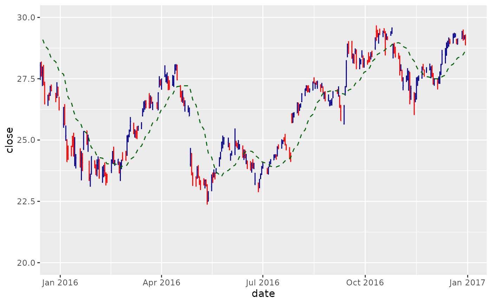
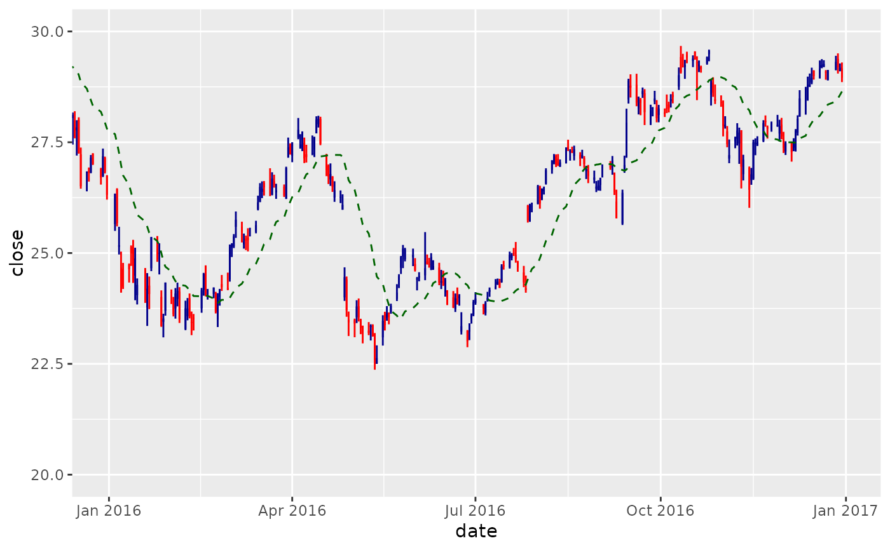

Financial charts provide visual cues to open, high, low, and close prices.
Use coord_x_date() to zoom into specific plot regions.
The following financial chart geoms are available:
Usage
geom_barchart(
mapping = NULL,
data = NULL,
stat = "identity",
position = "identity",
na.rm = TRUE,
show.legend = NA,
inherit.aes = TRUE,
colour_up = "darkblue",
colour_down = "red",
fill_up = "darkblue",
fill_down = "red",
...
)
geom_candlestick(
mapping = NULL,
data = NULL,
stat = "identity",
position = "identity",
na.rm = TRUE,
show.legend = NA,
inherit.aes = TRUE,
colour_up = "darkblue",
colour_down = "red",
fill_up = "darkblue",
fill_down = "red",
...
)Arguments
- mapping
Set of aesthetic mappings created by
ggplot2::aes()orggplot2::aes_(). If specified andinherit.aes = TRUE(the default), it is combined with the default mapping at the top level of the plot. You must supplymappingif there is no plot mapping.- data
The data to be displayed in this layer. There are three options:
If
NULL, the default, the data is inherited from the plot data as specified in the call toggplot2::ggplot().A
data.frame, or other object, will override the plot data. All objects will be fortified to produce a data frame. Seeggplot2::fortify()for which variables will be created.A
functionwill be called with a single argument, the plot data. The return value must be adata.frame., and will be used as the layer data.- stat
The statistical transformation to use on the data for this layer, either as a
ggprotoGeomsubclass or as a string naming the stat stripped of thestat_prefix (e.g."count"rather than"stat_count")- position
Position adjustment, either as a string naming the adjustment (e.g.
"jitter"to useposition_jitter), or the result of a call to a position adjustment function. Use the latter if you need to change the settings of the adjustment.- na.rm
If
TRUE, silently removesNAvalues, which typically desired for moving averages.- show.legend
logical. Should this layer be included in the legends?
NA, the default, includes if any aesthetics are mapped.FALSEnever includes, andTRUEalways includes. It can also be a named logical vector to finely select the aesthetics to display.- inherit.aes
If
FALSE, overrides the default aesthetics, rather than combining with them. This is most useful for helper functions that define both data and aesthetics and shouldn't inherit behavior from the default plot specification, e.g.ggplot2::borders().- colour_up, colour_down
Select colors to be applied based on price movement from open to close. If
close >= open,colour_upis used. Otherwise,colour_downis used. The default is"darkblue"and"red", respectively.- fill_up, fill_down
Select fills to be applied based on price movement from open to close. If close >= open,
fill_upis used. Otherwise,fill_downis used. The default is"darkblue"and "red", respectively. Only affectsgeom_candlestick().- ...
Other arguments passed on to
ggplot2::layer(). These are often aesthetics, used to set an aesthetic to a fixed value, likecolor = "red"orsize = 3. They may also be parameters to the paired geom/stat.
Aesthetics
The following aesthetics are understood (required are in bold):
x, Typically a dateopen, Required to be the open pricehigh, Required to be the high pricelow, Required to be the low priceclose, Required to be the close pricealphagrouplinetypesize
See also
See individual modeling functions for underlying parameters:
geom_ma()for adding moving averages to ggplotsgeom_bbands()for adding Bollinger Bands to ggplotscoord_x_date()for zooming into specific regions of a plot
Examples
library(dplyr)
library(ggplot2)
library(lubridate)
AAPL <- tq_get("AAPL", from = "2013-01-01", to = "2016-12-31")
# Bar Chart
AAPL %>%
ggplot(aes(x = date, y = close)) +
geom_barchart(aes(open = open, high = high, low = low, close = close)) +
geom_ma(color = "darkgreen") +
coord_x_date(xlim = c("2016-01-01", "2016-12-31"),
ylim = c(75, 125))
#> Warning: The following aesthetics were dropped during statistical transformation: open,
#> high, low, close, y
#> ℹ This can happen when ggplot fails to infer the correct grouping structure in
#> the data.
#> ℹ Did you forget to specify a `group` aesthetic or to convert a numerical
#> variable into a factor?
#> Warning: The following aesthetics were dropped during statistical transformation: open,
#> high, low, close
#> ℹ This can happen when ggplot fails to infer the correct grouping structure in
#> the data.
#> ℹ Did you forget to specify a `group` aesthetic or to convert a numerical
#> variable into a factor?
#> Warning: The following aesthetics were dropped during statistical transformation: open,
#> high, low, close
#> ℹ This can happen when ggplot fails to infer the correct grouping structure in
#> the data.
#> ℹ Did you forget to specify a `group` aesthetic or to convert a numerical
#> variable into a factor?

# Candlestick Chart
AAPL %>%
ggplot(aes(x = date, y = close)) +
geom_candlestick(aes(open = open, high = high, low = low, close = close)) +
geom_ma(color = "darkgreen") +
coord_x_date(xlim = c("2016-01-01", "2016-12-31"),
ylim = c(75, 125))
#> Warning: The following aesthetics were dropped during statistical transformation: open,
#> high, low, close, y
#> ℹ This can happen when ggplot fails to infer the correct grouping structure in
#> the data.
#> ℹ Did you forget to specify a `group` aesthetic or to convert a numerical
#> variable into a factor?
#> Warning: The following aesthetics were dropped during statistical transformation: x,
#> open, high, low, close, y
#> ℹ This can happen when ggplot fails to infer the correct grouping structure in
#> the data.
#> ℹ Did you forget to specify a `group` aesthetic or to convert a numerical
#> variable into a factor?
